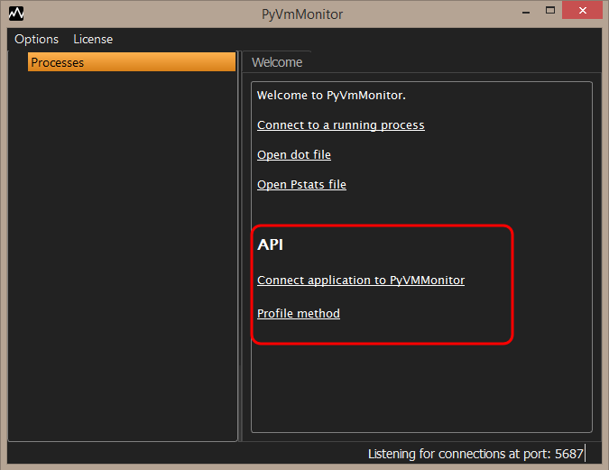

Attach to running CPython program and use Yappi to do a profile session
Command line parameters for PyVmMonitor
API to use PyVmMonitor programatically
PyVmMonitor preferences (theme, listening port, editor font, etc.)
Copyright 2014-2024 - Brainwy Software Ltda.
Hosted on GitHub Pages - Theme by orderedlist
For added flexibility, it's possible to use PyVmMonitor programatically.
Some use-cases include connecting programatically to PyVmMonitor (instead of using the attach to running process) and making a profile session and sending the results to be shown in PyVmMonitor.
The main window has links with the available code-samples:
As a reference, the public API is designed around the pyvmmonitor package which has the following functions:
def connect(host='127.0.0.1', port=None):
'''
The host and port are optional. By default the host is 127.0.0.1 and the
port is obtained by querying the current settings of the application.
'''
def profile_method(*args, **kwargs):
'''
Decorator for profiling a method.
It can be used as a decorator without arguments (which will show the results
in the currently active pyvmmonitor ui):
@profile_method
def my_call():
...
Or can be customized by receiving kwargs:
@profile_method(filename='output.pstats', show_text=True, show_in_pyvmmonitor=False)
def my_call():
...
:param show_in_pyvmmonitor:
Determines if we should send the results to pyvmmonitor. If still
not connected, it'll connect to pyvmmonitor and then send the pstats
for visual inspection.
:param host:
Defaults to 127.0.0.1
:param port:
Defaults to the value which is currently saved in the application
settings.
:param filename:
Optional attribute. If given we'll also save the pstats results to the
given filename.
:param show_text:
If given we'll also print the profile results when the profile finishes.
Should be a str or list(str) saying how to show the results.
I.e.: 'cumulative' or ('cumulative', 'time')
:param show_text_rows:
Only used if show_text is also passed (determines the number of rows to
print).
:param condition:
A callable which will receive *args and **kwargs to the wrapped function and will determine
whether the function should be profiled (if it returns True it'll be profiled, if it returns
False it won't).
'''